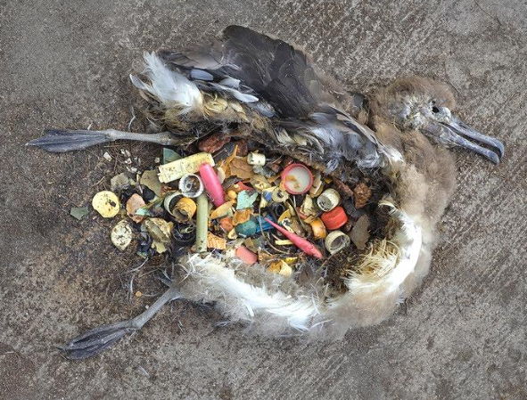

A Summary
Plastic pollution is the accumulation of plastic objects and particles (like bottles, bags, microplastics) in the Earth's environment, which adversely affects wildlife, wildlife habitat, and humans.
Nearly 25% of fish sampled in the Hauraki Gulf and 95% of hoki had microplastics in their guts.
NZers dispose of about 60 kg of plastic waste per person annually, with low domestic recycling rates.
77% of debris on NZ beaches is single-use plastic; 61% of total litter materials are plastic.
Effects on the Ecosystem
Plastic pollution has devastating effects on ecosystems. Animals can ingest plastic, leading to blockages, starvation, and death. Marine life can become entangled in plastic debris, causing injury or suffocation. As plastic breaks down into microplastics, these tiny particles contaminate soil and water, entering the food chain at every level. Microplastics can also absorb toxins from the environment, which are then passed on to the organisms that consume them.
Sources of Plastic Pollution
The primary source of plastic pollution in NZ is consumer waste, especially single-use plastics like water bottles, food packaging, and plastic bags. Other major contributors include industrial waste and abandoned fishing gear, known as "ghost gear," which continues to trap marine life for decades.
Effects on Our Beaches
Plastic is a major component of NZ's beach debris. In early 2025, hundreds of thousands of plastic "nurdles" (tiny plastic pellets) washed up on Waiheke Island’s beaches, likely from an Auckland-based plastics manufacturer. Only about half of plastics companies adhere to voluntary spill-prevention initiatives.